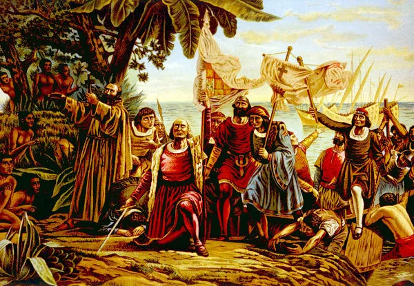

- PENSE
- PESQUISE
- ANALISE
- DESCUBRA
CONTEXTO HISTÓRICO
1.Intordução
2.Pioneirismo de Portugal
3. Chegada dos Europeus à América
MAS FOI EXATAMENTE ASSIM QUE ACONTECEU?
Descubra tudo no vídeo abaixo:
Cabral chegou a Porto Seguro, na Bahia, com 13 navios e 1.400 homens, entre marinheiros, engenheiros de navegação, escriturários, cozinheiros, padres e ajudantes. Saíram de Portugal em busca da Índia, chegando ao litoral sul da Bahia em 22 de abril de 1500. Só desembarcaram no dia 23, quando se descobriu que o terreno não estava desabitado. Aproximadamente 3 milhões de povos indígenas, ou índios, já viviam no Brasil.
“Isso deturpa a visão tradicional de que se trata de uma descoberta. Na verdade, Portugal não descobriu o Brasil, mas ocupou, invadiu e conquistou diversas tribos indígenas. Se o Brasil já tivesse uma população indígena local, isso teria sido menos uma descoberta e mais uma conquista. A comunidade estava dividida em vários países, dos quais quatro grupos eram os mais representativos. O povo Tupi vive no litoral e em partes do interior, e o povo Macroje vive no norte da Bacia Amazônica. Povo Arawak das Terras Altas Centrais. e Calliris, também da região amazônica. Algumas destas civilizações continuaram a viver como viviam na era Paleolítica, produzindo apenas o que necessitavam para a sobrevivência e não tendo excedentes. “Parte do povo Tupi já estava em transição do Paleolítico e praticava uma agricultura rudimentar nas chamadas fazendas brancas, onde se cultivava mandioca, inhame e feijão. Se estas comunidades não gerarem excedentes, não haverá comércio entre elas”, sublinhou Paulo Chávez. Não foi apenas a falta de comércio que moldou a vida dos índios e dos portugueses. Até então, as comunidades primitivas do Brasil nada sabiam sobre a escravidão.
“Ao contrário dos africanos que foram escravizados na guerra, os inimigos da Índia foram submetidos ao canibalismo e ao canibalismo litúrgico. Estas comunidades mostraram coragem e habilidade comendo a carne dos seus inimigos, e os guerrilheiros “Eu acreditava que as pessoas poderiam adquirir habilidades e outras virtudes”, disse o diz o professor. Outro aspecto prático é o infanticídio. Quando os gêmeos nasceram, os bebês foram sacrificados porque eram considerados representativos do bem e do mal. As civilizações primitivas do Brasil, embora diferentes entre si, tinham muitas semelhanças, como a pintura corporal, a dança, a música e a produção de instrumentos de sopro, como flautas e apitos, e de instrumentos de percussão, como tambores e outros pandeiros.